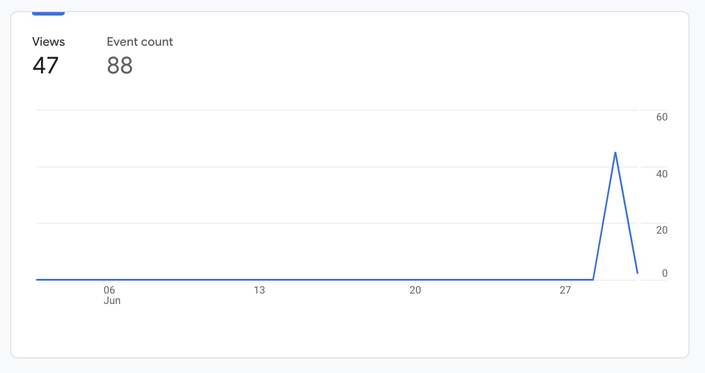

Welcome to the SurveillanceAroundYou
Student reports on surveillance
Student reports on surveillance
The purpose of our project is to fight back against school surveillance, which has become normalized and a part of the school experience. There are two main components to our site: an informational section and a forum. The informational section includes two pages that attempt to combat the lack of student awareness about school surveillance through articles. The forum allows the user to post their experience(s) of school surveillance in a way that works to highlight institutional surveillance as well as create a community among other students with similar experiences. We hope you can learn something from our project and think more about school surveillance. "
What kind of data is collected in most websites?
Site Value
User By Time
How Long Users Stick
User Viewing Events
User Engagement With Site
Group By Theme